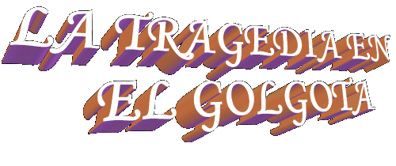

cuando, derramando una luz fina en la
tierra de Juda.
cuando, derramando una luz fina en la
tierra de Juda.
Era un dáa grisáceo, con nubes pesadas que ocupaban el cielo entero y muy
tímidamente el sol aparecía de vez en cuando, derramando una luz fina en la
tierra de Juda.
Un viento intermitente e incómodo barría todo ese paisaje triste y alzaba el polvo y las hojas secas caídos de los olivos, de los dátiles y cipreses que se encontraban dispersos a lo largo de la vertiente, en la dirección del Cuenca Cedron.
La tierra árida e irregular mostraba en el horizonte el perfil de sus montañas, con una tonalidad castaña oscura, poniéndose aún mês lúgubre esa tarde de abril.
Subiendo de la tierra, tres cruces baturras realzaban en el paisaje, con tres hombres colgados. Dos estaban en agonía de muerte con lamentos y gritos horribles. El hombre de la derecha, conocido por Dimas, luchaba tenazmente para superar los calambres que ya estaban subyugando sus mêsculos y estaba tornando su respiración difícil.
Germa, el crucificado de la izquierda, se debatía con angustia y con un esfuerzo inmenso para librarse, para romper la solidez de los claveles de hierro que ataban sus manos y sus pies al leño. Y cuanto mês esfuerzo hacia, imprimiendo un vigor mês grande en sus movimientos, mês maldiciones y blasfemias gritaba.
De la cruz del medio, totalmente deshecho y sin vida, JESÚS, el HIJO DE DIOS estaba colgado. El panorama era tenebroso y sélo inspiraba compasión y piedad.
Cerca de la Cruz de Cristo, estaban María, su estimada Madre, las Santas Mujeres y Juan Evangelista, "el discípulo amado". Mas adelante, estaban variados grupos, pequeños y distintos. En un de ellos, estaban Nicodemo y José de Arimateia que pertenecía al Gran Concejo Judáo, pero, en las ocultas simpatizaban con la Doctrina de JESÚS, lo Crucificado. En otro, tenia varias personas que lloraban y lamentaban el acontecido y detestaban ese epélogo cruel y sangriento para ÉL, que había hecho sélo "el bien", que sélo enseñó lo que era correcto y plegó la concordia y el amor fraterno. Los lamentos de aquellas personas, solo era interrumpido por dolorosos hipos, que cortaban el silencio de la atmêsfera que cubría el Calvario.
Un poco a la izquierda de Cristo, estaba un grupo con personas curiosas que se quedaron en la expectativa del evento de algún nuevo hecho y también, un otro grupo con escribas y fariseos. Entre esos estaban algunos que habían conspirado contra JESÚS. Ellos criticaban y hacían mofa de ÉL, sépticos de Su poder Divino.
Vinícius era el único soldado romano que quedá en el lugar y vigilaba los crucificados. Aunque, estaba inquieto y asustado y no conseguía controlar sus emociones desde el momento en que se pasaran varias manifestaciones de la naturaleza, con el sol que se ocultaba en un largo eclipse y lanzaba la oscuridad en Jerusalén. Los relámpagos y truenos rascaban el espacio a fuera y detonaban con un ruido ensordecedor, como si fuera desabra una tormenta terrible. Los temblores de tierra agitaron las casas y abrieron muchas tumbas, que fue causa de pánico y temor, y también, el velo del Templo que separa los santos del Santo, inexplicablemente fue rasgado de cima a lo bajo sin cualquier intervención humana.
Hombre simple, de pequeña instrucción, sin embargo puede percibir que esas manifestaciones que se pasaron en el momento en que ÉL expiró no eran normales, ellos indicaban que algo de muy extraordinario había se pasado. él no sabía lo que era pero creía efectivamente que estaba relacionado con el crucificado llamado JESÚS. Por eso estaba afligido y aprehensivo.
Cautelosamente él se acercó del grupo de las Santas Mujeres... Quisiera ver lo que ellas hacían y buscó entender sus actitudes y demostraciones de dolor. Pero simplemente ellas lloraban, uno junto de la otra, como si quisiesen en cierto modo de caridad, consolarse mutuamente, aunque llorando. Pero ellas no estaban consiguiendo controlarse ni a sí mismas y no estaban consiguiendo retener la inmensa conmoción que las envolvían. Todos los eventos terribles y violentos que JESÚS pasó, desde la Flagelación en Pretorio, los sufrimientos en el "Vía Crucis" hasta el Calvario y la muerte abominable en la Cruz, estaban presentes en sus corazones y vivo en el pensamiento.
Vinícius notó el drama de esas personas y quedá sensibilizado, entonces puede evaluar el gran amor y el mayor afecto que los unía y la melancolía que cercó de sus corazones. Aunque no conocía Aquel hombre, nada sabía con relación a su vida y a su trabajo, estaba pungido y penalizado con aquellas escenas impresionantes.
Lentamente alzó la cabeza y buscó con una mirada la Cara del Crucificado. JESÚS estaba ligeramente con la cabeza colgada a frente y mantenía los ojos y la boca cerrados. De los cabellos oscuros y desalióados, escurrían filetes de sangre que se pone abajo en Su rostro, serpenteando las arrugas y las cicatrices. La Cara horriblemente herida, con hematomas y tumefacciones en el lado izquierdo de la boca y en arriba de los cilios; la nariz estaba hinchada y bien desolló en la extremidad principal; en el cuerpo entero, también en los brazos y en las piernas, sélo se miraba las marcas de látigos y señales de cruel y implacable violencia, cortes profundos y poco profundos, heridas de todos los tamaños, cicatrices ensangrentadas, llenas de polvo que lo transformaba en un espectro de hombre, sin embargo, hacia visible en el Crucificado el aspecto de la dignidad y la verdadera imagen de un honrado soberano.
Pasaba de las 17 horas, cuando pasos en cadencia indicaban la llegada de una guarnición romana, con tres centuriones bajo el orden de uno de ellos, llamado Longinus.
Observando que Dimas y Germa aún estaban con vida, ellos les rompieron las piernas con una barra de hierro. Aunque fuese un hábito bárbaro, se usaba por ese tiempo para acelerar la muerte de los crucificados. Porque con las piernas rotas ellos no podrían obligar a los pies contra el leño y alzar el cuerpo afín de respirar, y así, ellos morían por asfixia.
Acercándose de JESÚS, vieron que ÉL ya estaba
muerto. Pero para certificar del hecho, el centurión Longinus, usando
su lanza, con violencia y decisión, clavó en su lado derecho abriendo una enorme
herida y alcanzando el Corazón, haciendo correr sangre y agua. (Juan 19,34)
usando
su lanza, con violencia y decisión, clavó en su lado derecho abriendo una enorme
herida y alcanzando el Corazón, haciendo correr sangre y agua. (Juan 19,34)
Todavía el centurión Longinus quedá perplejo por la grande cantidad de sangre que bajo por la lanza, y alcanzó su mano y respingó en sus ojos. Irritado y demostrando aversión, clavó la lanza en la tierra y buscó la esponja que fue usada para ofrecer vinagre a los crucificados afines de limpiar sus ojos, la mano y la lanza. Sin embargo quedá sorprendido al verificar que, aunque consiguió quitar el exceso de sangre, sus ojos estaban quemando, la palma de su mano derecha y la extensión longitudinal de la lanza se quedaron manchadas con el color rojo de la sangre de JESÚS. Desconfiado y notando que era un extraño el evento, tentó esconderlo de los compañeros.
Por poco tiempo quedaran en Gólgota. Los tres "malhechores" ya estaban muertos, por consiguiente la misión fue ejecutada. él dio una voz de orden y pronto los soldados si alinearon, ademês de Vinícius, y volvieron a la ciudad para decir a Poncio Pilatos la conclusión del trabajo en la colina del Calvario.
Entretanto, caminando a la Fortaleza Antonia, donde se encontraba el Procurador Romano, Longinus empezó a sentir reacciones extrañas en su organismo. Su brazo temblaba como si estuviese perdiendo la fuerza, o como si la lanza estuviese mês pesada, al punto de tener dificultades en lo transporte. Por otro lado, a las veces no veía derecho, su visión estaba turba y también sentía una presión muy grande en la cabeza, similar a los dolores causados por alguno mal, y eso transmitió también un inmenso desanimo y fatiga en su cuerpo. él no conseguía entender lo que se pasaba. Era joven, fuerte, estaba muy bien de salud, normalmente se alimentaba y, particularmente en ese dáa, desde la mañana se sentía contento, relajado y con mucha disposición para el trabajo. Por eso no estaba entendiendo aquella ocurrencia...
Caminando con dificultad, procuró esconder de los compañeros la tensión que soportaba, afín de no demostrar debilidad y también porque no sabría como explicar las reacciones que sentía y cual era su origen. él sabia que algo de anormal estaba se pasando, pero no imaginaba lo que era. Así, silencioso, caminó hasta el Tribunal Romano que estaba cerca del Templo judáo.
Llegando allí, transmitió al procurador Poncio Pilatos las noticias sobre la muerte de los crucificados y a seguir bajó la sala donde estaba la guardia pretoriana.
Pujó un pequeño banco y se sentó, reclinándose en la pared. Miró sus manos y examinó minuciosamente la lanza... Ellos se quedaban manchados de sangre. él fregó un tejido en la mano y también en la lanza, con fuerza y decisión. En vano, la mancha de sangre no salió. él se levantó cogió una toalla y enjabona en el armario y fue al tanque. Lavó las manos vigorosamente, incluso fregó jabón en la lanza hasta con ansiedad, sin conseguir cualquier resultado positivo.
 Admirado y sin saber lo que hacer,
volvió a sentarse en el mismo lugar. Y pensativo, allí se quedá.
Admirado y sin saber lo que hacer,
volvió a sentarse en el mismo lugar. Y pensativo, allí se quedá.
En su vida, aunque sentía simpatía por algunos dioses, no cultivaba y ni practicaba una amistad con ellos. él no había formado su convicción a respeto de la religión y por eso se comportaba con cierta indiferencia, cuando las personas mencionaban el asunto en su presencia.
De una manera general las personas incrédulas, que no cultivan la religión, son siempre fácilmente envueltas por las supersticiones.
él nació con un problema en los dos ojos. Había ocasiones en que quedaban tan llenos de lágrimas que embazaban completamente la visión. Siguiendo consejos de amigos probó una serie de tratamientos, sin cualquier mejora. ¡Ahora, estaba con los ojos quemando debido a la sangre del Crucificado llamado JESUS! ¿Qué estaba se pasando?
En aquello momento, solo, sus pensamientos nerviosamente divagaban y recordaban una serie de creendices muy comúns por ese tiempo, ademês de también imaginar que aquello era una maldición, indicando que la mancha en el brazo y la quemazón en los ojos eran los síntomas de una enfermedad muy seria,"que lo condenaba definitivamente a la muerte."
¿Pero, y la marca de sangre en la lanza? ¿Cuél seráa su significado?
Y así, consumido por un torbellino de pensamientos, se quedá durante largo tiempo en aquel local. Ese dáa terminó como los otros, o sea, con el toque de recoger del vigilante alertando a los guardias pretorianos que fuesen a los alojamientos.